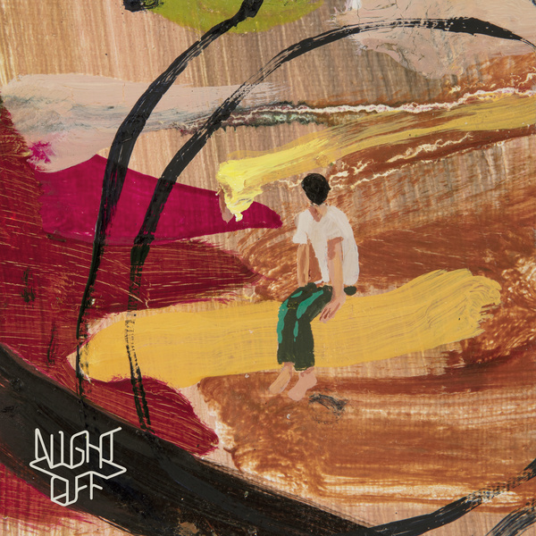

[Take A Night Off]

[우린 매일매일]

[예쁘게 시들어 가고 싶어 너와]
[마지막 밤]
‘외출이 허용되는 밤’, ‘일이 없는 밤’이라는 뜻의 나이트오프는
오랫동안 각자의 팀을 해오던 이들에게 이 작업이 밤의 특별한 외출처럼
여유롭고 신비로운 시간이 될 거라는 기대가 담겨져 있다.
음악적 대의를 위한 거창함보다는 서로의 음악에 대한 신뢰를 바탕으로 일상적인 만남과 순간의 기분, 현재의 관심사에 집중하며
작업을 해 보고자 하는 그들의 바람이 느껴진다. 정규앨범이나 ep가 아닌 더블싱글로 이들의 활동이 시작되는 것에서부터
이들의 기존 작업과 구별되는 나이트오프만의 성격을 엿볼 수 있다.
[Take A Night Off]
[우린 매일매일]
[예쁘게 시들어 가고 싶어 너와]
[마지막 밤]
Eaeon
"소리를 비틀고 배반하는 유희 즐기죠."
현재 밴드 못(MOT)의 리더이자 보컬.
| 소속 그룹 | 못, 나이트오프 |
|---|---|
| 학력 | 연세대햑교 전파공학 |
| 데뷔 | 2004년 못 1집 앨범[비선형] |
| 수상 | 2008년 제5회 한국대중음악상 최우수 모던록 음반상 2004년 한국대중음악상 신인상 |
| 사이트 | [Instagram] @eaeon |
이능룡
"새로운 음악이 새로운 가치를 만들어 줬고
모르고 있던 세상의 문을 열어줬죠."
밴드 언니네 이발관에서 기타를 맡고 있다.
| 소속 그룹 | 언니네 이발관, 나이트오프 |
|---|---|
| 학력 | 서울시립대학교 영어영문학과 |
| 출생 | 1987년 10월 14일(음력) |
| 직업 | 음악가 및 감독 |
호감(好感). 좋게 여기는 마음.
따지고 보면 거의 모든 일의 시작인 동시에 생각해 보면 의외로 좀처럼 느끼기 어려운 감정이기도 하다.
매일을 살아가는 우리의 몸을 억지로 움직이게 하는 건 대개 해야만 하는 일에 대한 의무감이나 생존을 위한 관성의 몸부림이다.
짓눌리고 찌든 일상 속 누군가 혹은 무언가에 대한 호감으로 시작된 일들은 그래서 더없이 귀하고 소중하다. 갑작스레 만들어진 술자리, ‘둘이 함께 음악을 해 보는 게 어떠냐’는 지인의 즉흥적 제안,
그리 친하지 않은 관계 사이의 서먹함, 실망을 줘서 관계를 망칠지도 모른다는 두려움 같은 갖가지 상황과 감정이 뒤섞였다.
마치 ‘언제 밥 한 번 먹자’처럼 기약 없이 연장되던 느슨한 약속의 말에 결정적 버튼을 누른 건 언니네 이발관 해체 소식이었다.
각자의 음악과 센스에 대한 두터운 신뢰를 바탕으로, 이능룡과 이이언의 만남은 구체적인 형태를 잡아가기 시작했다